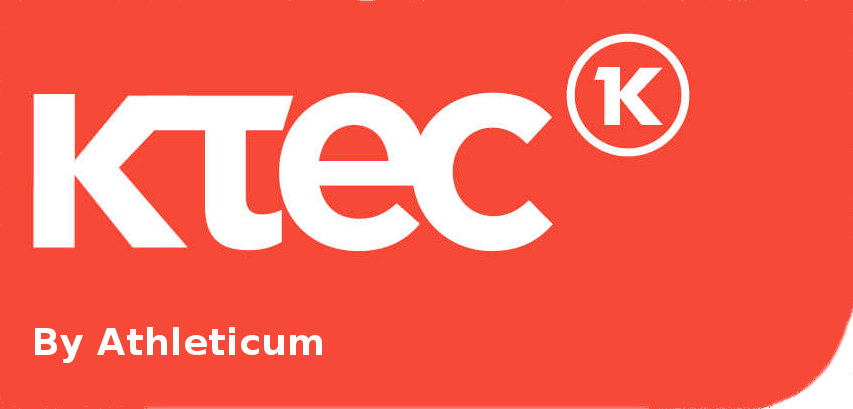

Die Mission
Wir verpflichten uns der kontinuierlichen Stärkung unserer Marke
und Produkte, um unsere Wettbewerbsposition zu verbessern.
Wir orientieren uns an unseren Kunden. Deshalb verbessern wir
fortwährend die Qualität, das Design und das Image unserer Produkte sowie unsere
organisatorischen Strukturen.
Wir legen Wert auf Engagement und Innovation. Daher reagieren
wir schnell auf gesellschaftliche Themen und Entwicklungen. Zeitgeist und Trends sind
ständig in Bewegung und fordern von uns Einsatz und Kreativität, um unseren Kunden
Aktualität zu bieten.
Wir handeln sozial und ökologisch verantwortungsbewusst.
Die Auswahl sämtlicher Produktionsstätten erfolgt anhand ihrer technischen Möglichkeiten
und ihrer höheren sozialen Standards. Unser Team zeigt eine starke Präsenz
in den Fabriken, um eine möglichst enge Zusammenarbeit zu ermöglichen. Darüber
hinaus beauftragen wir unabhängige Prüfer mit der Kontrolle der Anlagen unserer
Vertragspartner, um uns laufend zu informieren.